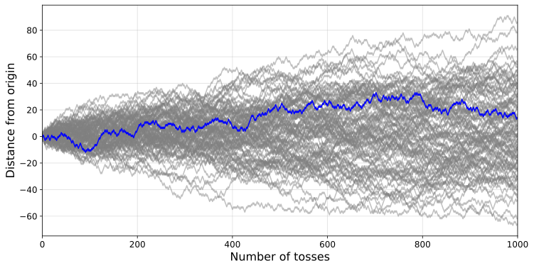

Coin flipping, coin tossing, or heads or tails is the practice of throwing a coin in the air and checking which side is showing when it lands, in order to choose between two alternatives, heads or tails, sometimes used to resolve a dispute between two parties. It is a form of sortition which inherently has two possible outcomes. The party who calls the side that the coin lands on wins.
The historical origin of coin flipping is the interpretation of a
chance outcome as the expression of divine will[citation needed].
Coin flipping was known to the Romans as navia aut caput ("ship or head"),
as some coins had a ship on one side and the head of the emperor on the
other. In England, this was referred to as cross and pile.
A roman coin with the head of Pompey the Great on the obverse and a ship on the reverse
The coin may be any type as long as it has two distinct sides; it need not be a circulating coin as such.
The figure above shows 1000 simulated tosses of 100 fair coins, where each head counts as +1 and each tail counts as -1. A randomly selected trajectory is shown in blue.
Home Next